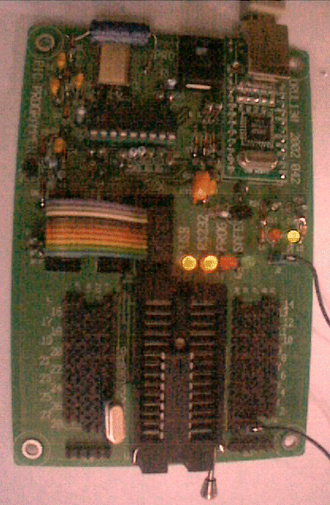
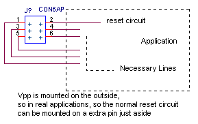
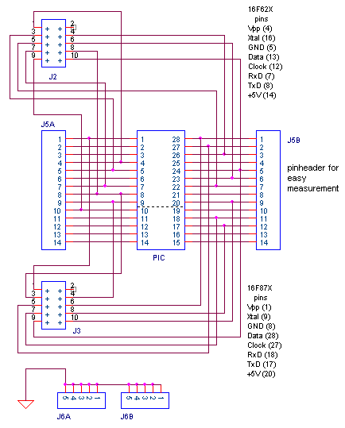
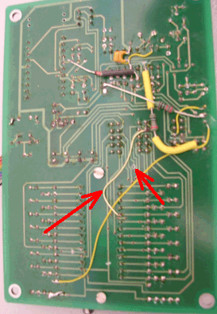
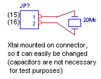
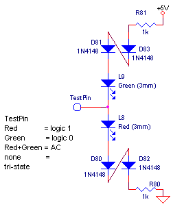

July 2002
USB PIC-programmer
Previous versions (RS232) programmers, can be found here: version 5 , version 4 , version 2 , version 1
|
On the right the fully mounted PCB is shown (sorry for my bad camera). At the bottom of the PCB the ZIF-socket and test pins can be seen. Below is a drawing of the testpins. They are arranged is such a way that even the large scope probes can easily be attached and there is also a number of ground pins at the final bottom of the PCB. Row A in the drawing is meant to connect directly complete pheriperals like an LCD display. That's the reason why there's 1 extra pin, so both Ground and Vpp are available on both sides of the PIC.
|
 |
In normal use the PC communicates with the controller-PIC through the RS232 lines. Data is transmitted in bursts and the controller-PIC takes care of the necessary programming actions. The programming is done through pin-A3 (clock) and pin-A2 (data) of the controller-PIC.
The power supply is switched on/off by FET Q11. If the PIC is powerless, the green LED L2 will light.
The high voltage is generated by a voltage trippler, build as a charge pump around D10 ... D13 and C10 ... C13. The high voltage is switched on/off by FET Q10. As the source for the voltage trippler, the PWM output (running at 50 kHz) of the controller-PIC is used. When the red LED L1 lights, the high voltage is active. The rising edge of the high voltage is very fast (10 nsec), so there's no need to block the Xtal of the PIC to be programmed.
The collection of resistors R30 ... R36, makes the following states possible
The circuit around D1 ... D3 , R1, R2 , C1 and C2 makes it possible to load other firmware in the controller-PIC.
A few resistors (like R7) are not functional necessary, but are added for extra safety in case wrong software is loaded.
|
Selection of the device or circuit to be programmed is done through a 10-wire flatcable, as shown on the right. For in circuit programming only 6 lines of this flatcable are necessary, as shown below. J1: Vpp = high voltage, connected to MCLR J2: reset circuit of an existing circuit Because the normal reset circuit of a pic contains a protection diode, it must be decoupled during programming. For normal operation of an existing circuit, a jumper must be placed between J1 and J2 (this is not necessary when the circuit is connected to the programmer, because the controller PIC controls the reset MCLR pin). J3: GND J4: not used in this design (for old serial programmers this pin should be tied to the Xtal input, to block the Xtal oscillator during the rising edge of Vpp) J5: Program clock output J6: Program data io-port J7: Extra serial receiver input, can be connected to hardware USART J8: Extra serial receiver output, can be connected to hardware USART J9: Must be connected to the low voltage pin of the PIC, to block low voltage programming J10: +5V, can be used to supply the test circuit (max 500 mA, but if higher then 100 mA it must be set in the windows USB driver ?)  |
 |
|
17 july 2005,
|
 |
|
On the right a simple logic-probe is drawn, which can be used during software debugging. For debugging, the PIC can be left in the ZIF socket and a Xtal can be mounted on the measurement pins as shown below.  |
 |
Some remarks on the USB-MOD1 module:
Tested PICs (ordened by family)
|
16F8x |
16F62x |
16F87x |
12F |
|
|
|
16F84 16F84A |
16F628 |
16F876 16F877 |
12F675 |
|
|
{kind=link}